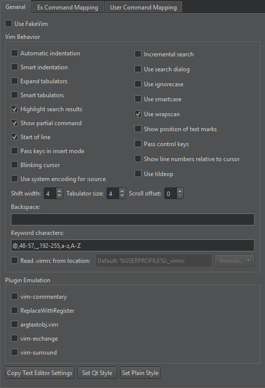
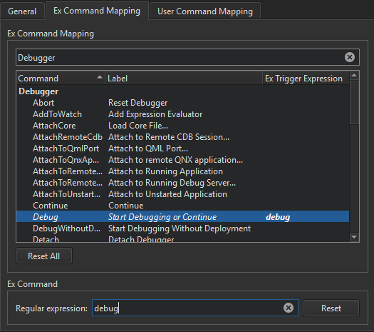
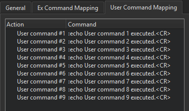

FakeVim
To set prerences for Vim-style editing, go to Preferences > FakeVim.
Setting Vim Behavior
To set Vim behavior, go to Preferences > FakeVim > General.

To use presets:
- To preselect the indentation settings specified for the text editor, select Copy Text Editor Settings.
- To preselect the Qt coding style, select Set Qt Style.
- To preselect a simple indentation style, select Set Plain Style.
Then change the preselected settings.
Emulating Plugins
Select popular vim plugins to emulate in Plugin Emulation.
The following table describes the available plugins with links to them.
| Vim Plugin | Description |
|---|---|
| vim-commentary | gc action to comment code regions. For example, gcc, gc2j, gcip |
| ReplaceWithRegister |
|
| argtextobj.vim | Defines the ia and aa text objects for function parameters. |
| vim-exchange | A text exchange operator for vim. |
| vim-surround | Adds mappings for deleting, adding, and changing surroundings. |
Mapping FakeVim Commands
To map commands entered on the FakeVim command line to Qt Creator functions:
- Go to Preferences > FakeVim > Ex Command Mapping.
- Enter a string in the Filter field to find a Qt Creator function.

- Select a function in the list
- In the Regular expression field, nter a string that will trigger the function.
You can see the trigger expression in the Ex Trigger Expression field.
To remove the selected trigger expression, select Reset.
To reset the trigger expressions for all functions, select Reset All.
Mapping User Commands
To map user commands to keyboard shortcuts, go to Preferences > FakeVim > User Command Mapping. The user command mapped to the shortcut is executed by FakeVim as if you were typing it (as when replaying a macro).

See also Edit like in Vim and FakeVim Modes and Commands.